Das ist Fuchs Baum
Seit mehr als 10 Jahren sind wir als Fachbetrieb für Baumpflege aktiv
und bekannt.
Wir helfen Privat- sowie Geschäftskunden Ihre Bäume sicher und gesund zu
erhalten. (Privatgärten, Kommunen, Hausverwaltungen, Firmen)
„Pflegen, erhalten, sichern… jeder Baum ist schützenswert. Bäume stellen
einen wichtigen Teil unseres Ökosystems dar, ohne sie wäre unser Leben
nicht möglich. Sie produzieren unseren lebensnotwendigen Sauerstoff und
binden schädliche Treibhausgase wie CO2. Ein Baum braucht uns nicht um
zu überleben, oder doch? Bäume sind ersetzbar: „Da wächst schon wieder
einer!“… einfach gesagt. Und schnell werden 100 Jahre alte Bäume einfach
gefällt mit den Argumenten sie seien gefährlich oder könnten jederzeit
umfallen. In vielen Fällen stimmt dieses Argument nicht. Der Baum ist
nicht generell gefährlich, er ist nur pflegebedürftig. Wir setzen uns
für den Erhalt von Bäumen ein und geben diesen eine Stimme!“
- Marco Fuchs